Induction Motor — Deadline April 1, 2013
Induction (or asynchronous) motors are the simplest and most reliable electric motors. They are powered by alternating current, and they do not contain commutators, slip rings or brushes. They consist of a stator and a rotor (see fig. 1). The stator is a fixed set of coils, which produces a rotating magnetic field in the plane perpendicular to the axis of the motor. The rotor is just a cage, i.e., a set of closed metallic loops attached to the axis of the motor. The rotating magnetic field produced by the stator induces electric current in the loops of the cage, which behave as magnetic dipoles, and interact with the external field of the stator. As a result, a torque is exerted on the rotor, and it starts rotating.
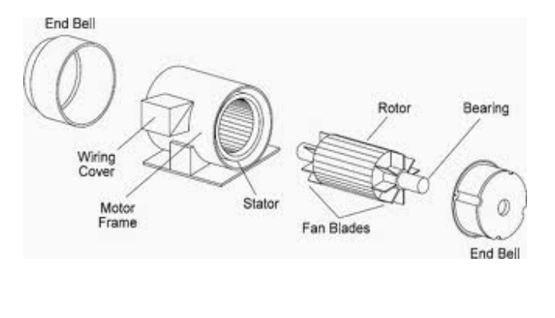
Figure 1: The structure of an induction motor.In a simplified model (see fig. 2) we assume that the magnetic induction vector produced by the stator is rotating in the – plane at a constant angular velocity , and it has a constant magnitude . The axis of the rotor is in the direction. The rotor is assumed to be a flat coil of area , winding number , Ohmic resistance and self inductance . The vector perpendicular to this coil is rotating also in the – plane.
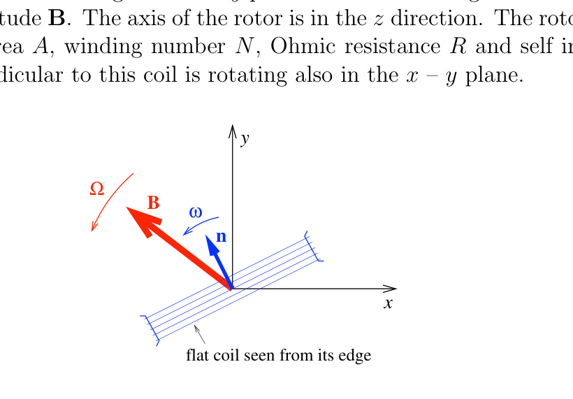
Figure 2: The simplified model, seen from the axis.Stationary operation
First we study the stationary operation of the motor, when its angular velocity and torque are constant. As we shall see, when the motor is loaded, its angular velocity gets smaller than . It is convenient to characterize this shift by the slip which is a dimensionless number between 0 and 1.
Stationary operation at small load
a. Assume that the load is small, so the slip . Determine the time average of the torque exerted by the motor as a function of the slip . (Use reasonable neglections.)
Stationary operation at arbitrary load
b. Determine the average torque as a function of an arbitrary slip value between 0 and 1.
c. Assume that . Sketch the graph of the function .
d. Find the maximal stationary torque and the corresponding slip .
Efficiency
e. Determine the efficiency of the motor as a function of the slip . (Assume that there is no energy loss due to friction, radiation.)
Stability
f. Assume that the motor is connected to an equipment (load) which has a linear characteristics, so for a stationary angular velocity a torque is needed, where is a positive constant. Determine graphically the stable and unstable operation points on the graph obtained in question c) for different -s.
Negative slip
g. Do the negative slip values have any physical meaning? If yes, what? If no, why?
Fonte: Testo (PDF) — p.1 Topic: Electromagnetic Induction, Electromagnetism Metodi: Faraday’s Law of Induction, Lenz’s Law, Torque & Angular Momentum Analysis, Differential Equations Competenze: Physical Reasoning, Mathematical Modeling, Diagrammatic Reasoning Objects: Coil, Magnetic Dipole
Motore di induzione Scadenza 1 aprile 2013
I motori ad induzione (o asincroni) sono i motori elettrici più semplici e affidabili. Sono alimentate da corrente alternata e non contengono commutatori, anelli di scivolamento o spazzole. Sono costituiti da statore e rotore (cfr. figura 1. 1). Lo statore è un insieme fisso di bobine che produce un campo magnetico rotante nel piano perpendicolare all’asse del motore. Il rotore è solo una gabbia, cioè un insieme di circuiti metallici chiusi attaccati all’asse del motore. Il campo magnetico rotante prodotto dallo statore induce corrente elettrica nei circuiti della gabbia, che si comportano come dipoli magnetici e interagiscono con il campo esterno dello statore. Di conseguenza, viene esercitato un coppia sul rotore e comincia a girare.
**Figura 1: ** La struttura di un motore ad induzione.
In un modello semplificato (cfr. figura 2) supponiamo che il vettore di induzione magnetica prodotto dallo statore ruota nel piano x$$y a una velocità angolare costante , e abbia una magnitudine costante . L’asse del rotore è nella direzione . Si presume che il rotore sia una bobina piatta di superficie , numero di avvolgimento , resistenza ohmica e auto-induzione . Il vettore perpendicolare a questa bobina ruota anche nel piano x$$y.
**Figura 2: ** Il modello semplificato, visto dall’asse .
operazione stazionaria
In primo luogo studiamo il funzionamento stazionario del motore, quando la sua velocità angolare e la coppia sono costanti. Come vedremo, quando il motore è caricato, la sua velocità angolare diventa inferiore a . È conveniente caratterizzare questo spostamento con lo scivolamento che è un numero senza dimensioni tra 0 e 1.
Funzionamento stazionario a piccole cariche
a. Supponiamo che il carico sia piccolo, quindi la scorregazione . Determinare la media temporale della coppia esercitata dal motore in funzione della scorregazione . (Utilizzare ragionamenti ragionevoli per trascurare.)
operazione stazionaria a carico arbitrario
b. Determinare la coppia media come funzione di un valore di scorrimento arbitrario tra 0 e 1.
c. Supponiamo che . Segnare il grafico della funzione .
d. Trova la coppia massima di stazionariato e la corrispondente scorciatura .
Eficienza
e. Determinare l’efficienza del motore in funzione del slittamento . (Supponiamo che non ci sia perdita di energia a causa di attrito, radiazioni.)
Stabilità
f. Supponiamo che il motore sia collegato a un equipaggiamento (carico) che ha caratteristiche lineari , quindi per una velocità angolare stazionaria è necessaria una coppia , dove è una costante positiva. Determinare graficamente i punti di funzionamento stabili e instabili del grafico ottenuto nella questione c) per diversi -s.
Slip negativo
g. I valori di scivolamento negativi hanno significato fisico? Se sì, cosa? Se no, perché?
Fonte: Testo (PDF) — p.1 Topic: Electromagnetic Induction, Electromagnetism Metodi: Faraday’s Law of Induction, Lenz’s Law, Torque & Angular Momentum Analysis, Differential Equations Competenze: Physical Reasoning, Mathematical Modeling, Diagrammatic Reasoning Objects: Coil, Magnetic Dipole
Two-Ball Body
Two uniform balls 1 and 2 of radii cm and cm respectively are made of the same material of the mass density . They are firmly glued together to form a rigid body as shown in Figure 1. In this problem you will have to investigate various kinds of motions of that rigid body called the two-ball body.
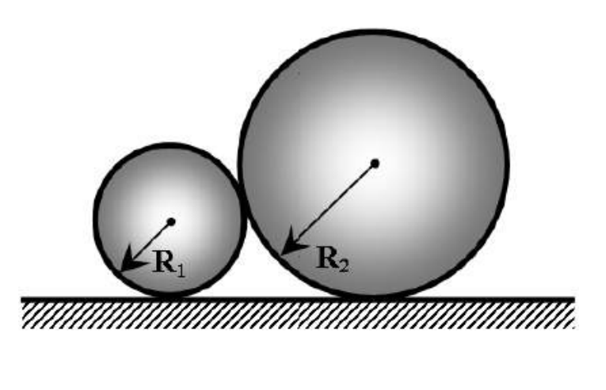
Figure 1: Two-ball body lying at rest on the flat horizontal surface.Part A
A1 Find the distance from the center-of-mass of the two-ball body to the center of ball 1. (0.4 points)
A2 Find the moment of inertia of the two-ball body about the axis that passes through balls’ centers. (0.6 points)
A3 Find the moment of inertia of the two-ball body about the axis that passes through its center-of-mass and goes perpendicular to the line connecting the balls’ centers. (1.0 points)
Warning! At the solution of the following parts of this problem it is desirable to derive analytical answers to the questions. Use to simplify the expression. However, if you find this difficult, you may calculate and provide numerical values only for each step of your solution.
Part B
Let the two-ball body be placed on the flat horizontal surface as shown in Figure 2. The smaller ball is right under the larger one such that the line connecting the centers of the two balls is strictly perpendicular to the surface. It is obvious that such an equilibrium position is unstable and an insignificant random deflection will set the two-ball body into a motion due to gravity whose acceleration is .
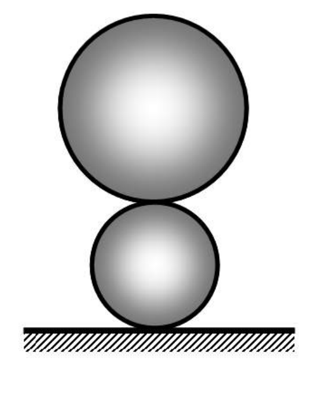
Figure 2: Initial position of the two-ball body for Part B.B1 Assume that the friction between the lower ball and the surface is so strong that there is no slipping at all times. Find the velocities of balls’ centers at the time moment right before the larger ball hits the ground. Draw a sketch with the depicted velocities of balls’ centers. (1.5 points)
B2 Assume now that there is no friction at all between the lower ball and the surface. Find the velocities of balls’ centers at the time moment right before the larger ball hits the ground. Draw a sketch with the depicted velocities of balls’ centers. (2.5 points)
Part C
Let the two-ball body be placed on an inclined plane set at an angle against the horizontal. At the initial time moment the line connecting balls touching points with the surface is exactly parallel to the lower edge of the inclined plane as shown in Figure 3. In this Part assume that the friction between the balls and the surface is so strong that there is no slipping at all times. The two-ball body is released.
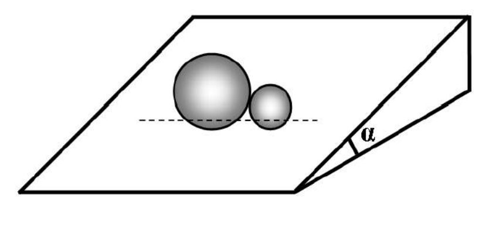
Figure 3: Initial position of the two-ball body for Parts C1-C2.C1 Find the maximal velocities of balls’ centers. (2.0 points)
C2 Find the angular acceleration of the two-ball body when the velocities of balls’ centers are maximal. (1.2 points)
Now assume that the two-ball body is at rest on the inclined plane such that the line connecting balls’ touching points with the surface is exactly perpendicular to the lower edge of the inclined plane as shown in Figure 4.
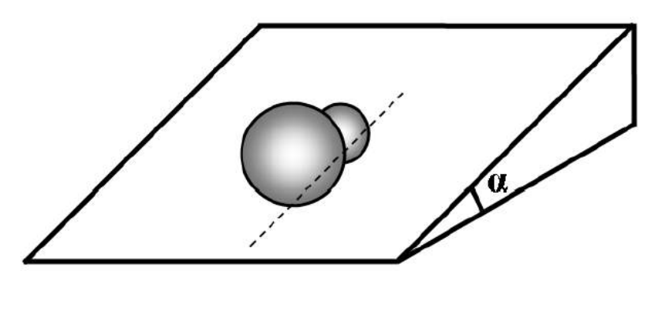
Figure 4: Initial equilibrium position of the two-ball body for Part C3.C3 Find the angular frequency of small oscillations of the two-ball body around the equilibrium position shown in Figure 4. (0.8 points)
Fonte: Testo (PDF) — p.1 Topic: Rotational Dynamics, Conservation of Energy Metodi: Torque & Angular Momentum Analysis, Conservation of Energy, Simple Harmonic Motion Analysis, Free-Body Diagram Competenze: Physical Reasoning, Mathematical Modeling, Diagrammatic Reasoning Objects: Sphere, Inclined Plane
Costruzione a due palle
Due sfere uniformi 1 e 2 di radii cm e cm sono realizzate rispettivamente dallo stesso materiale della densità di massa . Sono strettamente incollati insieme per formare un corpo rigido come mostrato alla figura 1. In questo problema dovrete studiare vari tipi di movimenti di quel corpo rigido chiamato corpo a due palle.
**Figura 1: ** Corpo a due palle riposato sulla superficie piatta orizzontale.
parte A
A1 Trova la distanza dal centro di massa del corpo a due palle al centro della palla 1. *(0,4 punti) *
A2 Trova il momento di inerzia del corpo a due palle intorno all’asse che attraversa i centri delle palle. *(0,6 punti) *
A3 Trova il momento di inerzia del corpo a due palle intorno all’asse che passa attraverso il suo centro di massa e va perpendicolare alla linea che collega i centri delle palle. *(1,0 punti) *
Avvertimento! Per risolvere le seguenti parti di questo problema è desiderabile derivare risposte analitiche alle domande. Per semplificare l’espressione, utilizzare . Tuttavia, se questo è difficile, è possibile calcolare e fornire valori numerici solo per ogni passo della soluzione.
**Parte B **
Il corpo a due palle deve essere posizionato sulla superficie orizzontale piatta come mostrato alla figura 2. La palla più piccola è proprio sotto quella più grande in modo tale che la linea che collega i centri delle due palle è rigorosamente perpendicolare alla superficie. È ovvio che una tale posizione di equilibrio è instabile e una svolta casuale insignificante metterà il corpo a due palle in movimento a causa della gravità la cui accelerazione è .
**Figura 2: ** Pozizione iniziale del corpo a due palle per la parte B.
B1 Supponiamo che l’attrito tra la palla inferiore e la superficie sia così forte che non ci sia sempre scivolamento. Trova le velocità dei centri delle palle nel momento giusto prima che la palla più grande colpisca il terreno. Disegna uno schema con le velocità raffigurate dei centri delle palle. *(1,5 punti) *
** B2 ** Supponiamo ora che non ci sia affrettamento tra la sfera inferiore e la superficie. Trova le velocità dei centri delle palle nel momento giusto prima che la palla più grande colpisca il terreno. Disegna uno schema con le velocità raffigurate dei centri delle palle. *(2,5 punti) *
**Parte C **
Il corpo a due palle deve essere posizionato su un piano inclinato fissato ad un angolo contro l’orizzontale. Al momento iniziale, la linea che collega le palle che toccano i punti della superficie è esattamente parallela al bordo inferiore del piano inclinato come mostrato alla figura 3. In questa parte si presume che l’attrito tra le palle e la superficie sia così forte che non ci sia scivolamento in ogni momento. Il corpo a due palle viene rilasciato.
**Figura 3: ** Pozizione iniziale del corpo a due palle per le parti C1-C2.
C1 Trova le velocità massime dei centri delle palle. *(2,0 punti) *
C2 Trova l’accelerazione angolare del corpo a due palle quando le velocità dei centri delle palle sono massime. *(1,2 punti) *
Ora supponiamo che il corpo a due palle sia a riposo sul piano inclinato in modo tale che la linea che collega i punti di tocco delle palle con la superficie sia esattamente perpendicolare al bordo inferiore del piano inclinato come mostrato nella Figura 4.
**Figura 4: ** Pozizione di equilibrio iniziale del corpo a due palle per la parte C3.
C3 Trova la frequenza angolare delle piccole oscillazioni del corpo a due palle attorno alla posizione di equilibrio mostrata nella figura 4. *(0,8 punti) *
Fonte: Testo (PDF) — p.1 Topic: Rotational Dynamics, Conservation of Energy Metodi: Torque & Angular Momentum Analysis, Conservation of Energy, Simple Harmonic Motion Analysis, Free-Body Diagram Competenze: Physical Reasoning, Mathematical Modeling, Diagrammatic Reasoning Objects: Sphere, Inclined Plane
Particles in the magnetosphere — Deadline: April 3rd, 2013
Earth is a very interesting magnetic system. Earth is frequently approximated as a huge magnetic dipole and therefore its magnetic field is not uniform. Due to this non-uniformity there are some zones in the magnetosphere in which charged particles get trapped. These zones are known as Van Allen belts and particles inside them have three main movements: gyration around each magnetic field line (Gyro motion), movement along the field line (Bounce motion), and rotation of lines around the magnetic axis of the Earth (ignored in this question).
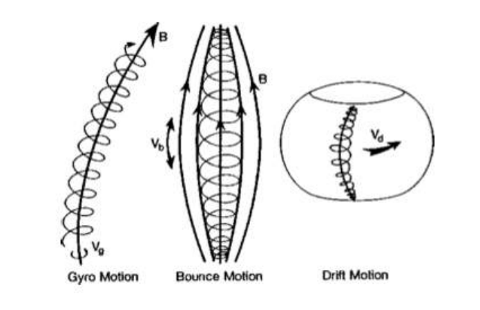
Due to the first two movements, particles travel along a helical path around the field lines. A key parameter to define such movement is the pitch angle , which is the ratio of the perpendicular and the parallel velocity components to the field line: \tan \alpha = \frac{v_\perp}{v_\parallel} \tag{1}
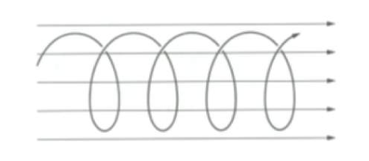
1. Path around field lines
The modulus of Earth’s magnetic dipole moment is . Earth’s magnetic field can be expressed in spherical coordinates as a function of the latitude and the distance to the center of the planet: \vec{B} = \frac{\mu_0}{4\pi}\frac{M_E}{r^3}\left(-2\sin\lambda\,\vec{u}_r + \cos\lambda\,\vec{u}_\lambda\right) \tag{2} where and are unitary vectors pointing radial and polar directions respectively, with azimuthal symmetry. However, for our purposes it will be useful to express the field modulus value along one of the field lines. These lines follow the equation where is the distance from the line to the center of the Earth at Equator. Moreover, the distance can also be expressed as a function of the parameter . With this notation, we can identify a field line with the parameter .
(a) Determine the modulus of the magnetic field along a field line as a function of the variables and . The magnetic field in the surface of the Earth at the Equator is . (1.5 points)
(b) Calculate the gyrofrequency and the gyroradius of the path of the protons around a field line as a function of , , , and its kinetic energy . (2.0 points)
2. Mirror points
When a proton rotates around a field line it generates a magnetic moment which remains constant along its path. When the proton reaches some latitude the parallel velocity becomes zero and the particle starts its path backwards. This latitude is known as the mirror point.
(a) Determine the magnetic moment created by a proton when it rotates around a magnetic field line as a function of , and the pitch angle of a particle at Equator . (0.8 point)
(b) Determine the relation between the mirror point latitude and . Compute its value numerically when . (2.0 points)
3. Particle collision
If the mirror point lies not far from the surface of the Earth the proton collides with the particles of the atmosphere. This distance is small compared with Earth radius ( km), so we will assume that the particles will collide when the mirror point is in the surface of the Earth.
(a) Determine the minimum equatorial pitch angle , below which a proton would collide with the surface of the Earth as a function of . (1.2 points)
(b) Determine the time that it takes for a proton to complete a whole cycle of the bouncing movement between the mirror points, with , MeV and . (1.2 points)
(c) Compute the length of the helical path of the proton in a whole cycle, taking into account the two movements we have considered in this problem. (0.8 point)
Fonte: Testo (PDF) — p.1 Topic: Magnetism, Electromagnetism Metodi: Lorentz Force Analysis, Calculus-Integration, Conservation Laws, Vector Decomposition Competenze: Physical Reasoning, Mathematical Modeling Objects: Planet, Magnetic Dipole, Point Charge
Particelle nella magnetosfera Data limite: 3 aprile 2013
La Terra è un sistema magnetico molto interessante. La Terra è spesso approssimata come un enorme dipolo magnetico e quindi il suo campo magnetico non è uniforme. A causa di questa non uniformità ci sono alcune zone nella magnetosfera in cui le particelle cariche vengono intrappolate. Queste zone sono conosciute come cinture di Van Allen e le particelle all’interno di esse hanno tre movimenti principali: rotazione intorno a ogni linea di campo magnetico (mozione di giro), movimento lungo la linea di campo (mozione di rimbalzo) e rotazione delle linee intorno all’asse magnetico della Terra (ignorato in questa domanda).
A causa dei primi due movimenti, le particelle viaggiano lungo un percorso elicottero intorno alle linee di campo. Un parametro chiave per definire tale movimento è l’angolo di ritiro , che è il rapporto tra la linea di campo perpendicolare e la velocità parallela: \tan \alpha = \frac{v_\perp}{v_\parallel} \tag{1}
1. Corso intorno alle linee di campo
Il modulo del momento di dipolo magnetico terrestre è . Il campo magnetico terrestre può essere espresso in coordinate sferiche in funzione della latitudine e della distanza dal centro del pianeta: \vec{B} = \frac{\mu_0}{4\pi}\frac{M_E}{r^3}\left(-2\sin\lambda\,\vec{u}_r + \cos\lambda\,\vec{u}_\lambda\right) \tag{2} dove e sono vettori unitari che puntano rispettivamente verso le direzioni radial e polare, con simmetria azimutare. Tuttavia, ai nostri fini sarà utile esprimere il valore del modulo di campo lungo una delle linee di campo. Queste linee seguono l’equazione dove è la distanza dalla linea al centro della Terra all’equatore. Inoltre, la distanza può essere espressa anche come funzione del parametro . Con questa notazione, possiamo identificare una linea di campo con il parametro .
**(a) ** Determina il modulo del campo magnetico lungo una linea di campo come funzione delle variabili e . Il campo magnetico della superficie terrestre all’equatore è . *(1,5 punti) *
**(b) ** Calcolare la girofrequenza e il giroradio del percorso dei protoni intorno a una linea di campo come funzione di , , e la sua energia cinetica . *(2,0 punti) *
2. Punti specchi
Quando un protone ruota intorno a una linea di campo genera un momento magnetico che rimane costante lungo il suo percorso. Quando il protone raggiunge una certa latitudine la velocità parallela diventa zero e la particella inizia il suo percorso verso l’indietro. Questa latitudine è conosciuta come il punto specchio.
**(a) ** Determina il momento magnetico creato da un protone quando ruota attorno a una linea di campo magnetico come funzione di , e l’angolo di ritiro di una particella all’equatore . *(0,8 punti) *
**(b) ** Determina la relazione tra la latitudine e del punto specchio. Calcolare numericamente il suo valore quando . *(2,0 punti) *
3. Collizione delle particelle
Se il punto specchio si trova non lontano dalla superficie terrestre il protone si schianta con le particelle dell’atmosfera. Questa distanza è piccola rispetto al raggio terrestre ( km), quindi presumerebbe che le particelle si collassino quando il punto specchio è nella superficie terrestre.
**(a) ** Determina l’angolo di passo equatoriale minimo , al di sotto del quale un protone colpirebbe con la superficie terrestre in funzione di . *(1,2 punti) *
**(b) ** Determina il tempo necessario per un protone per completare un intero ciclo di movimento di rimbalzo tra i punti specchi, con , MeV e . *(1,2 punti) *
**(c) ** Calcolare la lunghezza del percorso elicottero del protone in un intero ciclo, tenendo conto dei due movimenti che abbiamo considerato in questo problema. *(0,8 punti) *
Fonte: Testo (PDF) — p.1 Topic: Magnetism, Electromagnetism Metodi: Lorentz Force Analysis, Calculus-Integration, Conservation Laws, Vector Decomposition Competenze: Physical Reasoning, Mathematical Modeling Objects: Planet, Magnetic Dipole, Point Charge
Atmospheric evaporation by Jeans escape — Problem Creator: J. F. Romero, J. Medina and A. Gimeno
Thermal atmospheric escape is a process in which small gas molecules reach speeds high enough to escape the gravitational field of the Earth and reach outer space. Particles in a gas collide with each other due to their thermal energy. These collisions constantly accelerate and decelerate particles, varying their speed continuously. Particles might be accelerated until they reach the so-called escape velocity and leave the atmosphere. This process, known as Jeans escape, is critical for the formation and maintenance or the evaporation of the atmosphere of a planet. It is believed that it played an important role in the loss of water from Venus and Mars atmospheres, due to their lower escape velocity.
In this problem we will quantify the scattering (collisions between gas particles) and rate of loss of hydrogen in Earth’s atmosphere. The modulus and direction velocity distribution of the molecules of a gas of mass and at a temperature is given by the Maxwellian distribution: f(v)\,d^3v = \left(\frac{m}{2\pi kT}\right)^{\frac{3}{2}} \exp\left(-\frac{mv^2}{2kT}\right) v^2 \sin(\theta)\, dv\,d\theta\,d\varphi \tag{1} where is the velocity differential. In spherical coordinates it is expressed as .
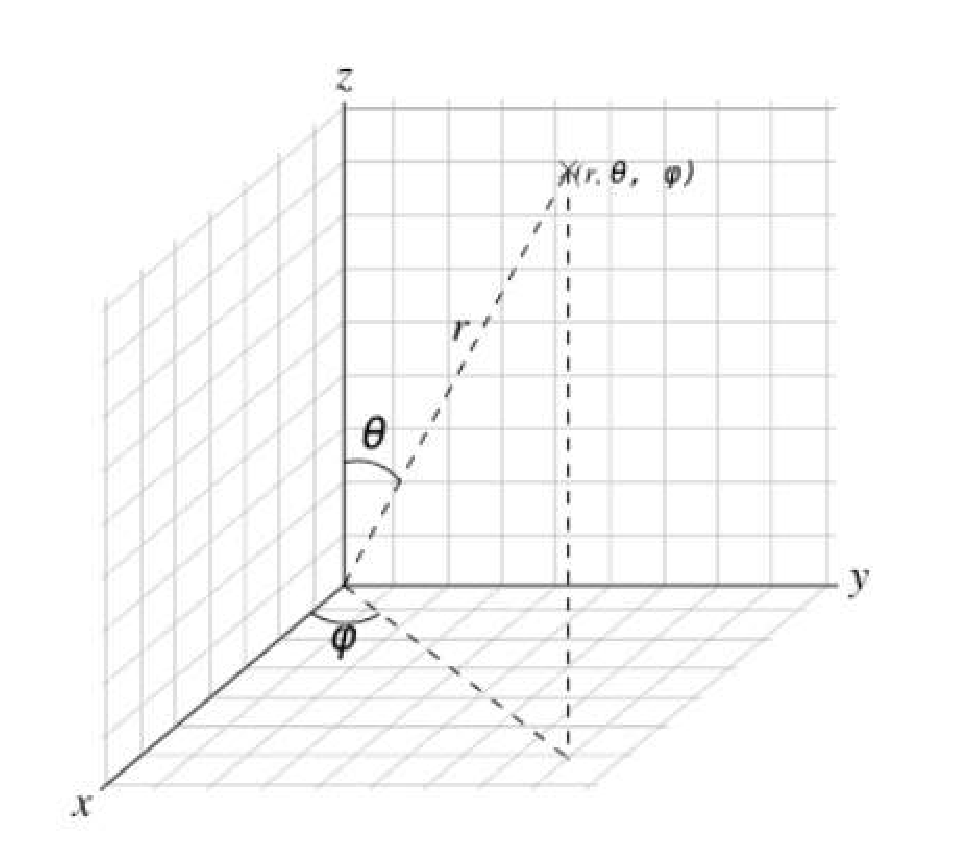
Figure 1: Schematic illustration of the spherical coordinate.Thus at any temperature there can always be some molecules whose velocity is greater than the escape velocity. A molecule located in the lower part of the atmosphere would not, in general, be able to escape to outer space even though its velocity is greater than the limit velocity because it would soon collide with other molecules, losing a big part of its energy. In order to escape, these molecules need to be at a certain height such that density is so low that their probability of colliding is negligible. The region in the atmosphere where this condition is satisfied is called exosphere and its lower boundary, which separates the dense zone from the exosphere, is called exobase. The temperature at the exobase is roughly 1000 K.
1. Exobase height
Exobase is defined as the height above which a radially outward moving particle will suffer less than one backscattering collision on average. This means that the mean free path has to be equal to the scale height, which is defined as the height where the atmosphere’s density is lower than on Earth’s surface ( m). The mean free path is the average distance covered by a moving particle in a gas (that we consider to be ideal) between two consecutive collisions and this can be expressed by the following equality: \lambda(h) = \frac{1}{\sigma\, n_V(h)}, \tag{2} where is the effective cross sectional area for the collision hydrogen atom-atmosphere and is the number of molecules per unit volume. Atmosphere’s density decreases with exponentially from altitude 250 km: P(h) = P_{Ref}\exp\left(-\frac{(h - h_{Ref})}{H}\right), \tag{3} where we know that at an altitude of 250 km, the pressure is 21 Pa. is the scale height, and its value is km.
(a) Determine the air particles mean free path at the altitude of 250 km. (0.8 points)
(b) Determine the exobase height . (1.2 points)
2. Atmospheric escape flux
Particles in the exobase with enough outwards velocity will escape gravitational attraction.
(a) Assuming a Maxwellian distribution, determine the probability that a hydrogen atom has a velocity greater than the escape velocity in the exobase. (2.0 points)
(b) Determine the hydrogen atoms flux (number of particle per unit area and per unit time) that will escape the atmosphere, knowing that the concentration of hydrogen atoms in the exobase is . Be careful with the dimensions. (2.0 points)
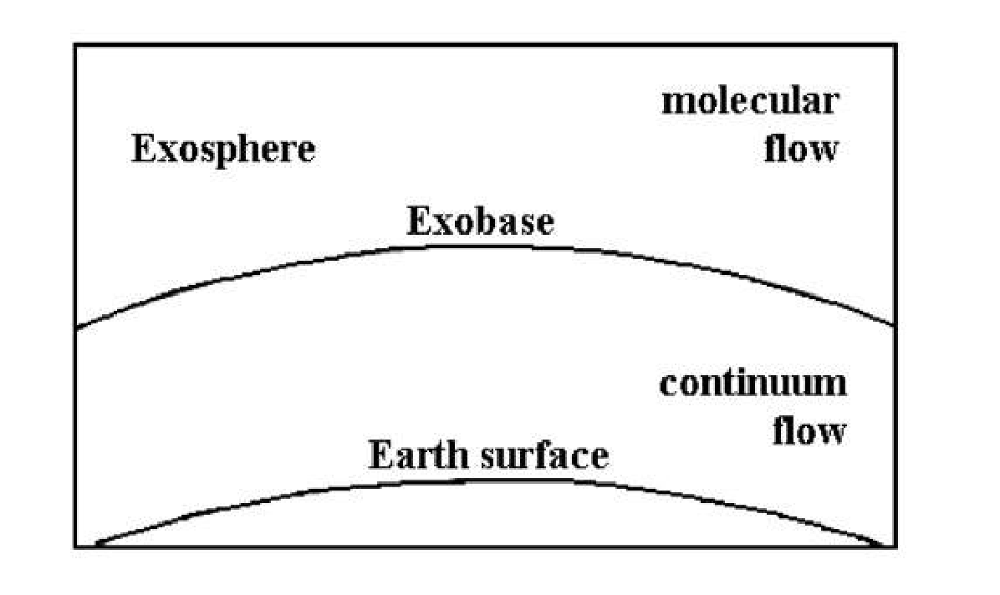
Figure 2: Diagram showing different zones of the atmosphere. In exosphere, particles with high enough velocities may leave the atmosphere.3. Evaporation of the atmosphere
Thermal atmospheric escape is one of the processes that explain why some gases are present in the atmosphere and some others are not. Currently the atmospheric pressure is approximately Pa and a fraction of of the atmosphere molecules are hydrogen molecules. When these molecules reach a certain height (lower than ) they split into two atoms due to solar radiation. Concentration of hydrogen atoms in the exobase can be considered constant over time.
(a) Knowing that the average molar mass of the atmosphere is , estimate the number of hydrogen atoms present in the Earth’s atmosphere. Assume that the gravity near earth surface is . (1 points)
(b) Find out how much time would it take for half of the hydrogen atom to escape the Earth’s atmosphere. (1.5 points)
(c) Find also this time for Helium atoms on Earth, knowing that their concentration in the exobase is . Helium atoms are the of the atmosphere. (1.5 points)
Jeans escape is not the only atmospheric escape process and there are also other reactions on the surface on Earth that may produce atmospheric gases. Yet this calculations should show the difference in orders of magnitude of the escape of different gases.
Fonte: Testo (PDF) — p.1 Topic: Kinetic Theory, Earth & Environmental Science Metodi: Kinetic Theory of Gases, Statistical Averaging, Calculus-Integration, Order-of-Magnitude Estimation Competenze: Estimation & Approximation, Mathematical Modeling, Unit Conversion Objects: Gas, Planet, Atom
L’evaporazione atmosferica da parte di Jeans escape F. Romero, J. Medina e A. Gimeno
L’evasione termica atmosferica è un processo in cui piccole molecole di gas raggiungono velocità sufficientemente alte per sfuggire al campo gravitazionale della Terra e raggiungere lo spazio esterno. Le particelle in un gas si collidono tra loro a causa della loro energia termica. Queste collisioni accelereranno e rallenteranno costantemente le particelle, variando continuamente la loro velocità. Le particelle potrebbero accelerare fino a raggiungere la cosiddetta velocità di fuga e lasciare l’atmosfera. Questo processo, noto come fuga di jeans, è critico per la formazione e il mantenimento o l’evaporazione dell’atmosfera di un pianeta. Si ritiene che abbia svolto un ruolo importante nella perdita di acqua dalle atmosfere di Venere e Marte, a causa della loro velocità di fuga inferiore.
In questo problema quantificheremo la dispersione (collizioni tra particelle di gas) e il tasso di perdita di idrogeno nell’atmosfera terrestre. La distribuzione di modulo e velocità di direzione delle molecole di un gas di massa e a temperatura è data dalla distribuzione di Maxwellian: f(v)\,d^3v = \left(\frac{m}{2\pi kT}\right)^{\frac{3}{2}} \exp\left(-\frac{mv^2}{2kT}\right) v^2 \sin(\theta)\, dv\,d\theta\,d\varphi \tag{1} dove è il differenziale di velocità. In coordinate sferiche è espressa come .
**Figura 1: ** Illustrazione schematica della coordinata sferica.
Pertanto, a qualsiasi temperatura ci possono essere sempre alcune molecole la cui velocità è maggiore della velocità di fuga. Una molecola situata nella parte inferiore dell’atmosfera non sarebbe, in generale, in grado di fuggire nello spazio esterno anche se la sua velocità è maggiore della velocità limite perché presto colliderebbe con altre molecole, perdendo una grande parte della sua energia. Per poter fuggire, queste molecole devono essere ad una certa altezza tale che la densità sia così bassa che la loro probabilità di collisione sia trascurabile. La regione dell’atmosfera in cui si soddisfa questa condizione si chiama esosfera e il suo confine inferiore, che separa la zona densa dall’esosfera, si chiama esobasi. La temperatura all’esobasi è di circa 1000 K.
1. Altezze di esobasi
L’esobasi è definita come l’altezza sopra la quale una particella in movimento radialmente verso l’esterno subirà in media meno di una collisione di ritorno. Ciò significa che il percorso libero medio deve essere uguale all’altezza della scala, che è definita come l’altezza in cui la densità dell’atmosfera è inferiore a quella della superficie terrestre ( m). Il percorso libero medio è la distanza media percorsa da una particella in movimento in un gas (che consideriamo ideale) tra due collisioni consecutive e questo può essere espresso con la seguente equazione: \lambda(h) = \frac{1}{\sigma\, n_V(h)}, \tag{2} dove è l’area di sezione incrociata effettiva per l’atomo di idrogeno-atmosfera di collisione e è il numero di molecole per unità di volume. La densità dell’atmosfera diminuisce esponenzialmente dall’altitudine di 250 km: P(h) = P_{Ref}\exp\left(-\frac{(h - h_{Ref})}{H}\right), \tag{3} dove sappiamo che ad un’altitudine di 250 km, la pressione è di 21 Pa. è l’altezza della scala e il suo valore è km.
**(a) ** Determinare la media di percorso libero delle particelle d’aria ad un’altitudine di 250 km. *(0,8 punti) *
**(b) ** Determina l’altezza dell’esobasi . *(1,2 punti) *
2. Fluxo di fuga atmosferica
Le particelle nell’esobasi con velocità sufficiente verso l’esterno sfuggiranno all’attrazione gravitazionale.
**(a) ** Supponendo una distribuzione maxwelliana, determinare la probabilità che un atomo di idrogeno abbia una velocità superiore alla velocità di fuga nell’esobasi. *(2,0 punti) *
**(b) ** Determinare il flusso di atomi di idrogeno (numero di particelle per unità di area e per unità di tempo) che sfuggiranno all’atmosfera, sapendo che la concentrazione di atomi di idrogeno nell’esobasi è . Fai attenzione alle dimensioni. *(2,0 punti) *
**Figura 2: ** Diagramma che mostra le diverse zone dell’atmosfera. Nell’esosfera, le particelle con velocità sufficientemente elevate possono lasciare l’atmosfera.
3. Evaporazione dell’atmosfera
L’escapamento termico atmosferico è uno dei processi che spiegano perché alcuni gas sono presenti nell’atmosfera e altri no. Attualmente la pressione atmosferica è di circa Pa e una frazione di delle molecole atmosferiche sono molecole di idrogeno. Quando queste molecole raggiungono una certa altezza (più bassa di ) si dividono in due atomi a causa della radiazione solare. La concentrazione di atomi di idrogeno nell’esobasi può essere considerata costante nel tempo.
**(a) ** Sapendo che la massa molare media dell’atmosfera è , si stima il numero di atomi di idrogeno presenti nell’atmosfera terrestre. Supponiamo che la gravità vicino alla superficie terrestre sia . *(1 punti) *
Scopri quanto tempo ci vorrebbe per la metà dell’atomo di idrogeno per sfuggire all’atmosfera terrestre. *(1,5 punti) *
**(c) ** Trova anche questa volta per gli atomi di elio sulla Terra, sapendo che la loro concentrazione nell’esobasi è . Gli atomi di elio sono i dell’atmosfera. *(1,5 punti) *
L’escapamento di jeans non è l’unico processo di fuga atmosferica e ci sono anche altre reazioni sulla superficie della Terra che possono produrre gas atmosferici. Tuttavia, questi calcoli dovrebbero mostrare la differenza di ordine di grandezza della fuga di diversi gas.
Fonte: Testo (PDF) — p.1 Topic: Kinetic Theory, Earth & Environmental Science Metodi: Kinetic Theory of Gases, Statistical Averaging, Calculus-Integration, Order-of-Magnitude Estimation Competenze: Estimation & Approximation, Mathematical Modeling, Unit Conversion Objects: Gas, Planet, Atom
Motion in the electrostatic field of a Dipole
The characterization of point object motion, when both radial and tangential forces are applied, is usually rather complicated, and requires advanced mathematical tools. However, some systems such as a motion of a point charge near an electric dipole, which have a very specific electrostatic field, provide interesting results, even for the case when an angular momentum is not conserved. Assume that the relativistic and the electromagnetic radiation effects can be neglected, unless otherwise stated.
1. Movement of the dipole
Start with a case, where a point small charged object with a charge is fastened to the table. The center of the dipole is fixed at the distance from the charged object (see Figure 1). The dipole consists of two identical small balls fastened to the tiny, rigid rod with a length , , so that the moment of inertia can be ignored. Each of the balls has a mass and have charge and . The dipole can rotate around its center in a plane parallel to the surface of the smooth table.
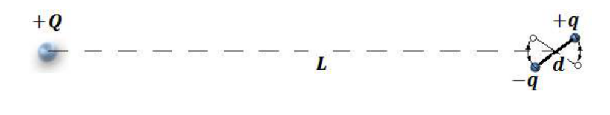
Figure 1: Schematic representation of the system used in section 1.1.1. Calculate the period of the small oscillations of the dipole around its stable equilibrium axis in the electrostatic field of the charged object.
Now, the dipole freely moves around the charged object, which is still fastened to the table. The dipole is launched with an initial velocity , as shown in Figure 2. The parameters of the system are chosen in such a way that the period of oscillation of the dipole in the electrostatic field of the fixed object is large enough to assume that the dipole is always oriented along the line between the dipole and the charged object.
2. Determine the magnitude of tangential and normal components of the velocity of the dipole in terms of , , , , , and . ( is the distance from the center of the dipole to the charged object).
In order for the dipole to get closer to the charged object, its initial velocity should be less than some critical value .
3. Find this critical initial velocity .
4. Sketch the trajectory of the center mass of the dipole for the case when the dipole is launched with the critical initial velocity , considering a very long time (radiation effects take place).
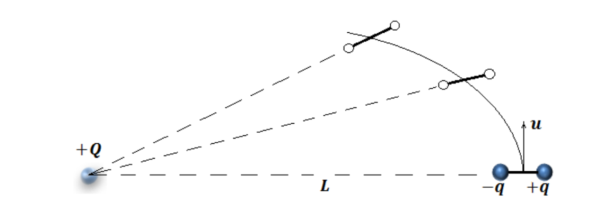
Figure 2: Top view of the case, when the dipole is moving around the fastened charged body. (Not to scale)Suppose that the condition is applied and radiation effects are very small.
5. What time is required to reduce the distance between the dipole and the charged body to half of the original distance?
2. Motion around the fixed dipole
In this part, analyze a situation when an angular momentum is not conserved. The system is the same as in the previous part with the only difference that the dipole is fixed and the charged small object with a mass is moving around the dipole. The electrostatic field of the dipole is easier to describe in the polar system of coordinates, which is defined with the distance from the center of the dipole, and angle counted counterclockwise, as shown in Figure 3.
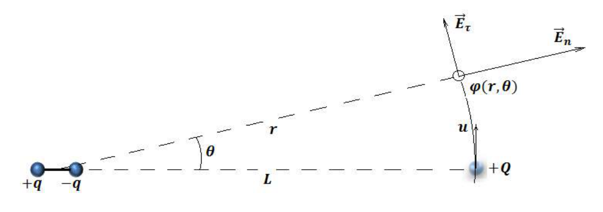
Figure 3: The system analyzed in Part 2. (Direction of the vector and could be wrong)1. Determine the electrostatic potential at a distance from the dipole, as a function of .
2. Find the components of the electric field and in terms of , , and .
3. What torque is applied to the moving object counting from the center of the dipole when the object is at the distance and angle from the dipole?
4. Determine tangential component of the velocity of the charged object as a function of coordinates and . Hint: angular velocity.
5. Calculate the normal component of the velocity of the moving object.
Now it is time to compare results with the first part.
6. Find the time to reduce the distance between the dipole and the charged body to .
3. Circular motion
In this part the peculiarity of the circular motion around the dipole is analyzed. Initially, the system is the same as in Part 2, with the exception that the charged object is connected to the center of the dipole with a light, rigid insulating rod with the length . This rod easily rotates around the axis, which is perpendicular to the surface of the table. Thus, the charged object moves around the dipole along circular trajectory with radius .
1. What is the maximum and minimum velocity of the charged object and during circular motion around the dipole?
2. Derive an expression for the force acting from the moving object on the rod in terms of , , , , and .
3. With what initial velocity should the charged object be launched, so that it will move around the dipole along a circular trajectory, even without the rigid rod?
4. Sketch the orbit of the charged object for the situation described in 3 after a long time (radiation effects make their impact on the motion).
Useful math: , where and are some constants.
Fonte: Testo (PDF) — p.1 Topic: Electrostatics, Newtonian Mechanics Metodi: Electric Potential Method, Coulomb’s Law, Torque & Angular Momentum Analysis, Calculus-Integration Competenze: Physical Reasoning, Mathematical Modeling, Diagrammatic Reasoning Objects: Point Charge, Rod
Movimento nel campo elettrostatico di un dipolo
La caratterizzazione del movimento di oggetti punti, quando vengono applicate sia forze radiali che tangenziali, è solitamente piuttosto complicata e richiede strumenti matematici avanzati. Tuttavia, alcuni sistemi come il movimento di una carica puntaria vicino a un dipolo elettrico, che hanno un campo elettrostatico molto specifico, forniscono risultati interessanti, anche per il caso in cui non si conservi un momento angolare. Supponiamo che gli effetti relativistici e delle radiazioni elettromagnetiche possano essere trascurati, a meno che non sia indicato diversamente.
1. Movimento del dipolo
Iniziare con un caso, in cui un piccolo oggetto carico a punto con una carica è fissato alla tabella. Il centro del dipolo è fissato alla distanza dall’oggetto carico (vedere figura 1). Il dipolo è costituito da due piccole palle identiche attaccate alla piccola e rigida canna con una lunghezza , , in modo da poter ignorare il momento di inerzia. Ciascuna delle palle ha una massa e ha carica e . Il dipolo può ruotare intorno al suo centro in un piano parallelo alla superficie della tavola liscia.
**Figura 1: ** Rappresentazione schematica del sistema utilizzato nella sezione 1.1.
1. Calcolare il periodo delle piccole oscillazioni del dipolo intorno al suo asse di equilibrio stabile nel campo elettrostatico dell’oggetto carico.
Ora, il dipolo si muove liberamente attorno all’oggetto carico, che è ancora attaccato alla tavola. Il dipolo viene lanciato con una velocità iniziale , come mostrato alla figura 2. I parametri del sistema sono scelti in modo tale che il periodo di oscillazione del dipolo nel campo elettrostatico dell’oggetto fisso sia sufficientemente grande da supporre che il dipolo sia sempre orientato lungo la linea tra il dipolo e l’oggetto carico.
2. Determinare la magnitudine delle componenti tangentili e normali della velocità del dipolo in termini di , , , , , e . ( è la distanza dal centro del dipolo all’oggetto carico).
Per avvicinare il dipolo all’oggetto carico, la sua velocità iniziale deve essere inferiore a un certo valore critico .
3. Trova questa velocità iniziale critica .
4. Descrivere la traiettoria della massa centrale del dipolo nel caso in cui il dipolo venga lanciato con la velocità iniziale critica , tenendo conto di un tempo molto lungo (si verificano effetti di radiazione).
**Figura 2: ** Vista superiore della cassa, quando il dipolo si muove intorno al corpo carico fissato. (Non a scala)
Supponiamo che si applichi la condizione e che gli effetti delle radiazioni siano molto piccoli.
5. Quanto tempo è necessario per ridurre la distanza tra il dipolo e il corpo carico alla metà della distanza originale?
2. Movimento intorno al dipolo fisso
In questa parte, analizzare una situazione in cui non si conserva un impulso angolare. Il sistema è lo stesso della parte precedente, con l’unica differenza che il dipolo è fisso e il piccolo oggetto carico con una massa si sta muovendo intorno al dipolo. Il campo elettrostatico del dipolo è più facile da descrivere nel sistema polare di coordinate, che è definito con la distanza dal centro del dipolo e l’angolo contato in senso contro orologio, come mostrato nella figura 3.
**Figura 3: ** Il sistema analizzato nella parte 2. (La direzione del vettore e potrebbe essere sbagliata)
1. Determina il potenziale elettrostatico a una distanza dal dipolo, come funzione di .
2. Trova i componenti del campo elettrico e in termini di , , e .
3. Qual è la coppia applicata all’oggetto in movimento che conta dal centro del dipolo quando l’oggetto è a distanza e angolo dal dipolo?
4. Determina la componente tangenziale della velocità dell’oggetto carico come funzione delle coordinate e . *Signore: * velocità angolare.
5. Calcolare la componente normale della velocità dell’oggetto in movimento.
Ora è il momento di confrontare i risultati con la prima parte.
6. Trova il tempo per ridurre la distanza tra il dipolo e il corpo carico a .
3. Movimento circolare
In questa parte viene analizzata la peculiarità del movimento circolare intorno al dipolo. Inizialmente, il sistema è lo stesso della parte 2, con l’eccezione che l’oggetto carico è collegato al centro del dipolo con una slitta rigida di isolamento di lunghezza . Questa canna ruota facilmente attorno all’asse, che è perpendicolare alla superficie della tavola. Pertanto, l’oggetto carico si muove intorno al dipolo lungo una traiettoria circolare con raggio .
Qual è la velocità massima e minima dell’oggetto carico e durante il movimento circolare intorno al dipolo?
2. Derivare un’espressione per la forza che agisce dall’oggetto in movimento sulla canna in termini di , , , , e .
Con quale velocità iniziale dovrebbe essere lanciato l’oggetto carico, in modo che si muova intorno al dipolo lungo una traiettoria circolare, anche senza la canna rigida?
4. Segnare l’orbita dell’oggetto carico per la situazione descritta in 3 dopo un lungo periodo di tempo (gli effetti delle radiazioni influenzano il movimento).
**Matematica utile: ** , dove e sono alcune costanti.
Fonte: Testo (PDF) — p.1 Topic: Electrostatics, Newtonian Mechanics Metodi: Electric Potential Method, Coulomb’s Law, Torque & Angular Momentum Analysis, Calculus-Integration Competenze: Physical Reasoning, Mathematical Modeling, Diagrammatic Reasoning Objects: Point Charge, Rod
Edges of a dodecahedron are made of wire of negligible electrical resistance; each wire includes a capacitor of capacitance , see figure. Let us mark a vertex and its three neighbours , and . The wire segments and are removed. What is the capacitance between the vertices and ?
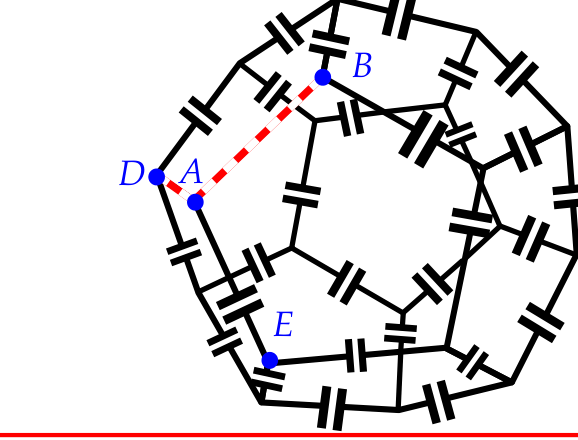
Fonte: Testo (PDF) — p.1 Topic: Circuits, Electrostatics Metodi: Equivalent Circuit Reduction, Kirchhoff’s Laws, Symmetry Argument, Superposition Principle Competenze: Physical Reasoning, Diagrammatic Reasoning Objects: Capacitor, Wire
I bordi di un dodecaedro sono costituiti da fili di resistenza elettrica trascurabile; ogni filo comprende un condensatore di capacità , vedi figura. Segniamo un vertice e i suoi tre vicini , e . I segmenti di filo e vengono rimossi. Qual è la capacità tra i vertici e ?
Fonte: Testo (PDF) — p.1 Topic: Circuits, Electrostatics Metodi: Equivalent Circuit Reduction, Kirchhoff’s Laws, Symmetry Argument, Superposition Principle Competenze: Physical Reasoning, Diagrammatic Reasoning Objects: Capacitor, Wire
A homogeneous ring lays horizontally on two identical parallel rails. The first rail moves parallel to itself, with a constant speed ; the second rail is at rest. The angular distance between the ring-rail contact points, as seen from the centre of the ring, is for the first rail, and for the second rail, see figure. Assuming that and , find the speed of the centre of the ring.
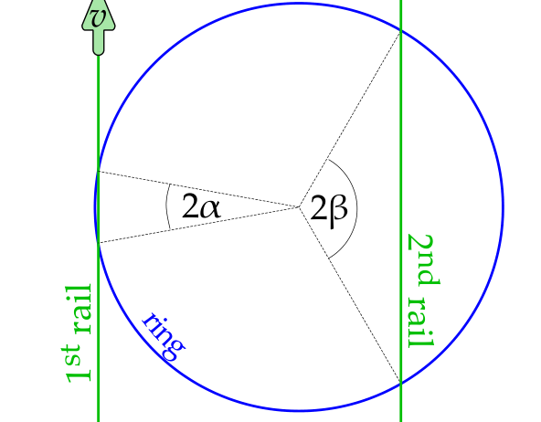
Fonte: Testo (PDF) — p.1 Topic: Rotational Dynamics, Newtonian Mechanics Metodi: Kinematic Equations, Vector Decomposition, Small-Angle Approximation, Symmetry Argument Competenze: Physical Reasoning, Diagrammatic Reasoning Objects: —
Un anello omogeneo si trova orizzontalmente su due binari paralleli identici. La prima rotaia si muove parallela a se stessa, con una velocità costante ; la seconda rotaia è in riposo. La distanza angolare tra i punti di contatto tra anello e rail, vista dal centro dell’anello, è per la prima rail e per la seconda rail, vedi figura. Supponendo che e , si trova la velocità del centro dell’anello.
Fonte: Testo (PDF) — p.1 Topic: Rotational Dynamics, Newtonian Mechanics Metodi: Kinematic Equations, Vector Decomposition, Small-Angle Approximation, Symmetry Argument Competenze: Physical Reasoning, Diagrammatic Reasoning Objects: —
Gas bubble in water (contributed by Mihkel Kree)
Introduction. People living in colder climates have surely noticed that by filling a glass with cold tap water one gets a glass of misty (or rather milky) water. The reason is that depressurizing and warming of the water causes the initially dissolved gas to come out of the solution and form tiny bubbles. In this problem you are going to calculate the size of such gas bubble in water.
A photographer prepared a setup consisting of a rectangular water tank with glass walls, a laser beam entering the water tank perpendicularly to one of its faces, and a camera looking directly towards a neighbouring face of the water tank. A gas bubbled entered the laser beam and the photographer managed to take five photos of the bubble while continuously defocusing the camera. The lens had internal focusing design, so that defocusing meant changing the focal length while keeping the position of the lens intact, see figure. The line of sight from the camera to the bubble was perpendicular to the laser beam, and the bubble was entirely inside the beam.
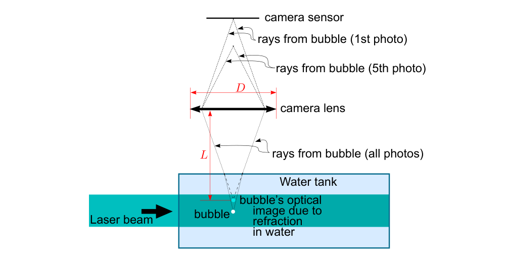
In the figure below, the taken photos are placed side by side and indicated by numbers .
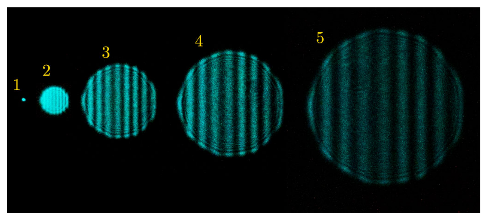
Task: calculate the diameter of the gas bubble.
Parameters: index of refraction of water with respect to gas: ; wavelength of the laser: nm; the lens of the camera can be considered as a single convex lens with focal length cm and diameter cm (the change of the focal length due to defocusing was less than 10%); the distance from the bubble to the lens: cm (more precisely, this is the distance from the lens to the image of the bubble as seen from the centre of the lens, see figure above).
Fonte: Testo (PDF) — p.1 Topic: Wave Optics, Geometric Optics Metodi: Interference & Diffraction Analysis, Thin Lens & Mirror Equation, Ray Tracing, Physical Modeling Competenze: Physical Reasoning, Diagrammatic Reasoning, Experimental Data Analysis Objects: Bubble, Container, Lens
Bolle di gas in acqua (contribuito da Mihkel Kree)
Introduzione. Le persone che vivono in climi più freddi hanno sicuramente notato che riempendo un bicchiere con acqua fredda del rubinetto si ottiene un bicchiere di acqua nebulosa (o piuttosto lattica). Il motivo è che la depresurizzazione e il riscaldamento dell’acqua fanno uscire il gas inizialmente disciolto dalla soluzione e formano piccole bolle. In questo problema si calcola la dimensione di una bolla di gas in acqua.
Un fotografo ha preparato un’impostazione composta da un serbatoio d’acqua rettangolare con pareti di vetro, un raggio laser che entra nel serbatoio perpendicolare ad una delle sue facce e una fotocamera che guarda direttamente verso una faccia vicina del serbatoio d’acqua. Una bolla di gas è entrata nel raggio laser e il fotografo è riuscito a scattare cinque foto della bolla mentre continuava a disfocalizzare la fotocamera. L’obiettivo aveva un design di messa a fuoco interno, in modo che la defocusing significava cambiare la distanza focale mantenendo intatta la posizione dell’obiettivo, vedi figura. La linea di visione dalla fotocamera alla bolla era perpendicolare al raggio laser, e la bolla era interamente all’interno del raggio.
Nella figura seguente, le foto sono posizionate fianco a fianco e indicate con i numeri .
**Tasco: ** calcolare il diametro della bolla di gas.
**Parametri: ** indice di rifrazione dell’acqua rispetto al gas: ; lunghezza d’onda del laser: nm; l’obiettivo della fotocamera può essere considerato come un unico obiettivo convex con lunghezza focale cm e di diametro cm (la variazione della distanza focale a causa della defocalizzazione è stata inferiore al 10%); la distanza dalla bolla alla lente: cm (più precisamente, questa è la distanza da quella dell’obiettivo all’immagine della bolla vista dal centro dell’obiettivo, vedi figura sopra).
Fonte: Testo (PDF) — p.1 Topic: Wave Optics, Geometric Optics Metodi: Interference & Diffraction Analysis, Thin Lens & Mirror Equation, Ray Tracing, Physical Modeling Competenze: Physical Reasoning, Diagrammatic Reasoning, Experimental Data Analysis Objects: Bubble, Container, Lens
High-efficiency light emitting diode (idea contributed by Mihkel Heidelberg)
Introduction. As compared to ordinary light bulbs, light emitting diodes (LED) provide very high lighting efficiency. The reason is that the spectral energy distribution of ordinary lamps is close to black body radiation, in which case one can say that the photons are in thermal equilibrium with the black body. Then, the total energy radiated by a black body per unit area, unit time, and unit frequency interval is given by Planck’s law where is the frequency, the Planck constant, the speed of light, the Boltzmann constant, and the temperature; note that where is the Stefan-Boltzmann constant. With a black body radiation, a lot of energy is wasted by radiating non-visible light. Meanwhile, LED-s can be constructed so that they radiate almost only visible light.
In recent experiments 1, it has been reported that such LED-s have been constructed which have efficiency higher that 100%. Here the efficiency is defined as the ratio of the radiated light energy to the consumed electrical energy.
Problem. Based on reasonable approximations, find what is the theoretically highest possible efficiency of a LED assuming that:
- (a) the LED has a heat sink which is kept at the room temperature K (via a fast enough heat exchange with the surrounding medium);
- (b) the LED emits light at wavelengths smaller than nm;
- (b) the surface area of the light-emitting part of the LED is ;
- (c) the light emission power of the LED is .
Fonte: Testo (PDF) — p.1 Topic: Modern-Quantum Physics, Thermodynamics Metodi: Photon Energy Relation, First Law of Thermodynamics, Calculus-Integration, Approximation & Series Expansion Competenze: Physical Reasoning, Estimation & Approximation, Mathematical Modeling Objects: Photon
Diodo di emissioni luminose ad alta efficienza (idea di Mihkel Heidelberg)
Introduzione. Rispetto alle normali lampadine, i diodi emettenti luce (LED) offrono un’efficienza di illuminazione molto elevata. La ragione è che la distribuzione di energia spettrale delle lampade ordinarie è vicina alla radiazione del corpo nero, nel qual caso si può dire che i fotoni sono in equilibrio termico con il corpo nero. Quindi, l’energia totale irradiata da un corpo nero per unità di area, tempo e intervallo di frequenza unitario è data dalla legge di Planck dove è la frequenza, la costante di Planck, la velocità della luce, la costante di Boltzmann e la temperatura; si noti che dove è la costante di Stefan-Boltzmann. Con una radiazione del corpo nero, molta energia viene sprecata irradiando luce invisibile. Nel frattempo, i LED possono essere costruiti in modo che irradiino quasi solo luce visibile.
In recenti esperimenti 1 è stato riportato che sono stati costruiti LED con efficienza superiore al 100%. In questo caso l’efficienza è definita come il rapporto tra l’energia luminosa irradiata e l’energia elettrica consumata.
**Problema.**Sulla base di approssimazioni ragionevoli, si può trovare l’efficienza teoricamente più elevata possibile di un LED supponendo che:
- **(a) ** il LED ha un dissipatore di calore che viene mantenuto a temperatura ambiente K (attraverso uno scambio di calore abbastanza rapido con il mezzo circostante);
- **(b) ** il LED emette luce a lunghezze d’onda inferiori a nm;
- **(b) ** la superficie della parte che emette la luce del LED è ;
- **(c) ** la potenza di emissione luminosa del LED è .
Fonte: Testo (PDF) — p.1 Topic: Modern-Quantum Physics, Thermodynamics Metodi: Photon Energy Relation, First Law of Thermodynamics, Calculus-Integration, Approximation & Series Expansion Competenze: Physical Reasoning, Estimation & Approximation, Mathematical Modeling Objects: Photon
Magnetic levitation
A rectangular superconducting plate of mass has four identical circular holes, one near each corner, see figure. Each hole carries a certain magnetic flux (all the four fluxes are equal and of the same polarity). The plate is put on a horizontal surface which is also in a superconducting state. The magnetic push between the plate and the surface compensates the weight of the plate when the width of the air gap beneath the plate is , which is much smaller than the distance between the plate’s and holes’ edges (denoted by in figure); is also much smaller than the radii of the holes.
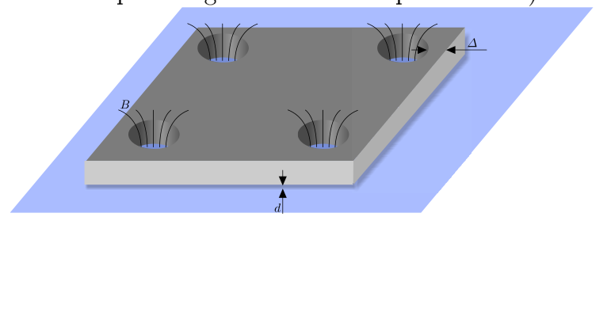
When the plate levitates in such a way above the support, the frequency of its small vertical oscillations is . Next, a load of mass is put on the plate, so that the load lays on the plate, and the plate levitates above the support. What is the new frequency of small vertical oscillations (when the load and plate together oscillate up and down)?
Fonte: Testo (PDF) — p.1 Topic: Magnetism, Oscillations & Waves Metodi: Simple Harmonic Motion Analysis, Physical Modeling, Energy Conservation Method, Approximation & Series Expansion Competenze: Physical Reasoning, Mathematical Modeling Objects: —
Livitazione magnetica
Una piastra superconduttrice rettangolare di massa ha quattro fori circolari identici, uno vicino ad ogni angolo, vedi figura. Ogni buco porta un certo flusso magnetico (tutti i quattro flussi sono uguali e della stessa polarità). La piastra è posta su una superficie orizzontale che è anche in stato di superconduttore. La spinta magnetica tra la piastra e la superficie compensa il peso della piastra quando la larghezza del divario d’aria sotto la piastra è , che è molto inferiore alla distanza tra i bordi della piastra e i buchi (indicato da nella figura); è anche molto inferiore ai raggi dei buchi.
Quando la piastra leviterà in modo tale sopra il supporto, la frequenza delle sue piccole oscillazioni verticali è . Successivamente, viene posto su una piastra un carico di massa , in modo che il carico si posa sulla piastra e la piastra leviterà sopra il supporto. Qual è la nuova frequenza di piccole oscillazioni verticali (quando il carico e la piastra oscillano insieme su e giù)?
Fonte: Testo (PDF) — p.1 Topic: Magnetism, Oscillations & Waves Metodi: Simple Harmonic Motion Analysis, Physical Modeling, Energy Conservation Method, Approximation & Series Expansion Competenze: Physical Reasoning, Mathematical Modeling Objects: —